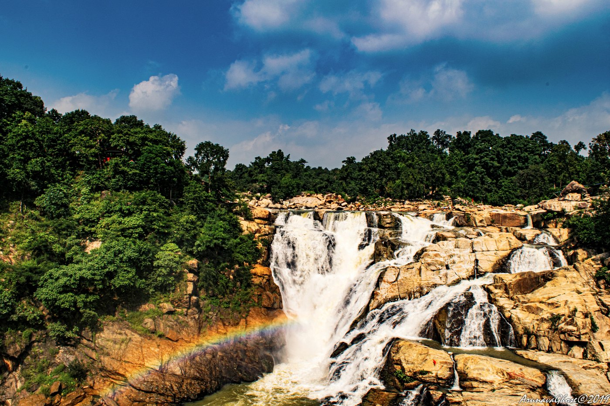
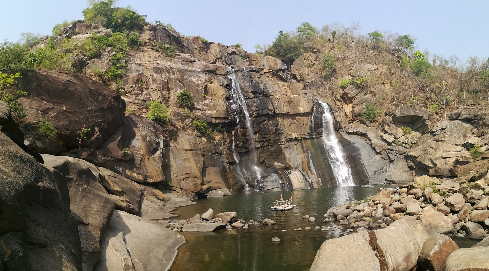
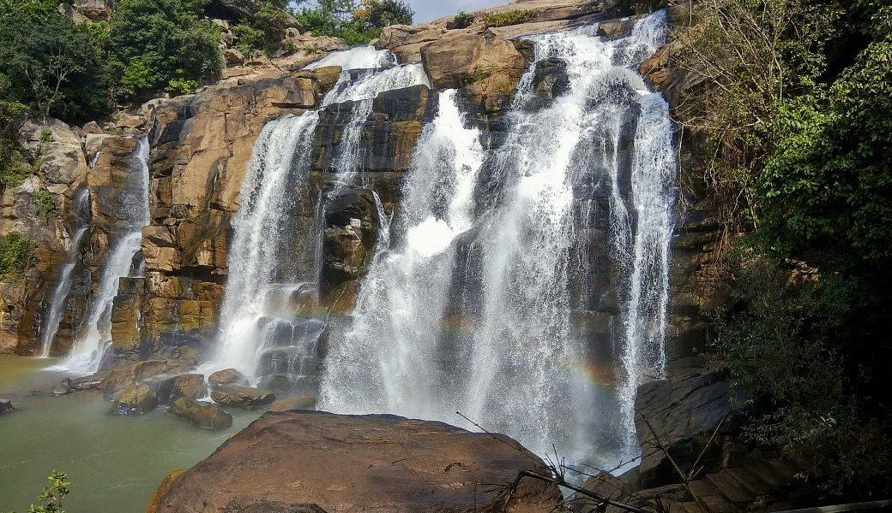
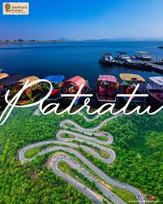
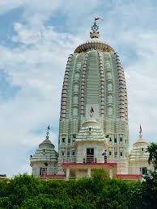
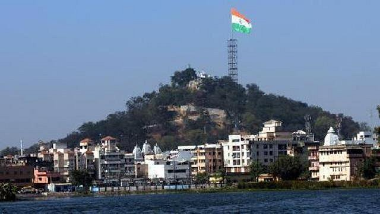
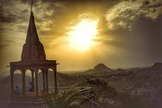
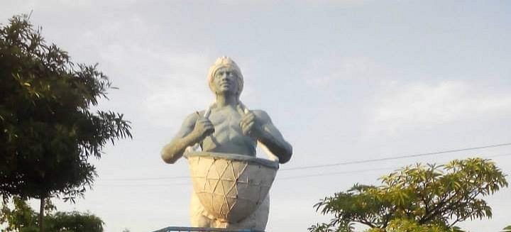
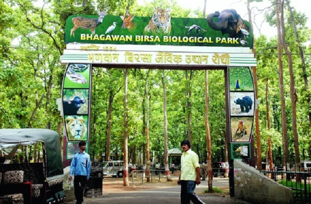
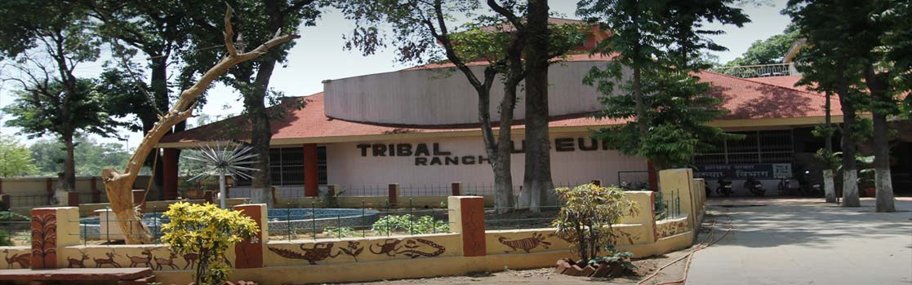

Namaste🙏Discover Ranchi
City of Waterfalls
Ranchi, the capital of Jharkhand, is renowned for its natural beauty, cultural heritage, and serene landscapes.Ranchi also called the "City of Waterfalls" due to its numerous picturesque waterfalls. Here's a comprehensive travel guide to help you explore the city's top attractions and plan your visit effectively.
Top attractions and activities to do at Ranchi
🌊Top Natural Attractions
1.Dassam Falls
Dassam Falls is a stunning waterfall where the Kachni River, a tributary of the Subarnarekha River, plunges from a height of 144 feet. It's an ideal spot for picnics and photography.
2.Hundru Falls
Hundru Falls is one of the highest waterfalls in the state, with a drop of 98 meters. The surrounding area offers trekking opportunities and is perfect for nature photography
3.Jonha Falls (Gautamdhara)
Jonha Falls is also known as Gautamdhara. It's a hanging valley falls and is associated with Lord Buddha, making it a place of both natural beauty and spiritual significance.
4.Patratu Valley
Patratu Valley offers a scenic drive through winding roads surrounded by hills and lush greenery. The Patratu Dam adds to the charm, with boating facilities available for visitors.
🛕Cultural & Spiritual Sites
5.Jagannath Temple
A replica of the famous Jagannath Temple in Puri, this temple in Ranchi is perched on a hilltop, offering panoramic views of the city. The temple's Rath Yatra attracts thousands of devotees annually.
6.Pahari Mandir
Located in the heart of Ranchi, Pahari Mandir is dedicated to Lord Shiva and sits atop a hill, providing a panoramic view of the city. It's especially popular during the Shravan month.
7.Tagore Hill
Named after Nobel laureate Rabindranath Tagore, who is said to have written part of his famous work here, Tagore Hill offers a panoramic city view. Trekking here provides an adventurous trail leading to a breathtaking view of the city, especially enchanting at sunset.
8.St. Mary Cathedral

St. Mary's Cathedral is one of the oldest church of the Ranchi, in the Chota Nagpur Plateau area.St. Mary's Church was built in 1909 and remodelled with concrete structure during 25 May 1927.
🌿Parks & Museums
9.Rock Garden
Situated near Kanke Dam, the Rock Garden is a beautifully designed park featuring sculptures carved from rocks. The serene environment, combined with stunning views of Kanke Dam, makes it a perfect spot for relaxation and evening strolls.
10.Bhagwan Birsa Biological Park (Ranchi Zoo)
Located off Ormanjhi in Ranchi, this zoo houses a variety of mammals, birds, and reptiles. The park offers facilities like battery-operated vehicles, boating, and well-maintained pathways, making it suitable for family outings.
11.Tribal Museum
For those interested in learning about Jharkhand’s rich tribal heritage, the Tribal Museum in Ranchi showcases artifacts, traditional tools, and art forms of the indigenous communities of the region.

Your guide
"I have lived at Ranchi for years, so I can show you all of its best parts and hidden secrets."